화공기사(구)(구) (2009-08-30 기출문제)
1과목: 화공열역학
1. 정압 열용량 Cp를 옳게 나타낸 것은?
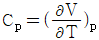
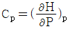
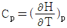
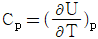
(정답률: 알수없음)

2. 다음 중 잠열(latent heat)에 해당 되지 않는 것은?
- 승화열
- 연소열
- 증발열
- 용융열
(정답률: 알수없음)
3. 다음 열역학적 특성값 중 상태함수가 아닌 것은?
- 엔트로피
- 내부에너지
- 비체적
- 열량
(정답률: 알수없음)
4. 이상기체에 대한 설명 중 틀린 것은? (단, U 는 내부에너지, Cp는 정압비열, Cu는 정적비열, R은 기체상수이다.)
- 이상기체의 등온가역 과정에서는 PV값은 일정하다.
- 이상기체의 경우 Cp-Cu = R 이다.
- 이상기체의 단열가역 과정에서는 TV값은 일정하다.
- 이상기체의 경우
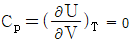
이다.
(정답률: 알수없음)
5. 기체가 단열 팽창한다면 엔트로피는 어떻게 되는가?
- 감소 또는 불변
- 증가 또는 불변
- 불변
- 증가와 감소를 반복
(정답률: 알수없음)
6. 다음의 반응식과 같이 NH4Cl이 진공에서 부분적으로 분해할 때 자유도수는?
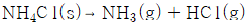
- 0
- 1
- 2
- 3
(정답률: 알수없음)
7. 100기압의 이상기체가 들어 있는 탱크에 수렴노즐(convergent nozzle)을 연결하여 기체를 가장 단시간에 뽑아내려고 한다. 제2탱크의 최대 허용압력은 약 몇 기압인가? (단, 비열비는 1.3 이다.)
- 55
- 77
- 90
- 100
(정답률: 알수없음)
8. 성분1과 성분2가 기-액 평형을 이루는 계에 대하여 라울(Raoult)의 법칙을 만족하는 기포점 압력 계산을 수행하였다. 계산결과에 대한 설명 중 틀린 것은?
- 기포점 압력계산으로 P-x-y 선도를 나타낼 수 있다.
- 기포점 압력 계산 결과에서 기상의 조성선은 직선이다.
- 성분 1의 조성이 1 일 때의 압력은 성분 1의 증기압이다.
- 공비점의 형성을 나타낼 수 없다.
(정답률: 알수없음)
9. 30롤% 의 A 를 포함하는 A, B 2성분계 용액이 30℃에서 기-액 평형하에 있다. 증기를 이상기체라 할 때 이 용액의 평형 압력은 약 몇 ㎜Hg 인가?(오류 신고가 접수된 문제입니다. 반드시 정답과 해설을 확인하시기 바랍니다.)
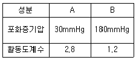
- 75
- 135
- 176
- 260
(정답률: 알수없음)
10.
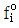
를 기준상태 하에서의 순수한 i 성분의 퓨개시티라고 하면 그 함수형을 옳게 나타낸 것은? (단, y는 기상 몰분율을 나타낸다.)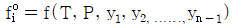
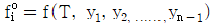
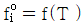
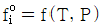
(정답률: 알수없음)
11. 실제 기체의 압력이 0 에 접근할 때 잔류(residual) 특성에 대한 설명으로 옳은 것은? (단, 온도는 일정하다.)
- 잔류 엔탈피는 무한대에 접근하고 잔류 엔트로피는 0 에 접근한다.
- 잔류 엔탈피와 잔류 엔트로피 모두 무한대에 접근한다.
- 잔류 엔탈피와 잔류 엔트로피 모두 0 에 접근한다.
- 잔류 엔탈피는 0 에 접근하고 잔류 엔트로피는 무한대에 접근한다.
(정답률: 알수없음)
12. 다음 중 오토기관(Otto cycle)의 열효율을 나타낸 식은? (단, r는 압축비, K는 비열비이다.)
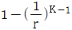
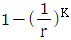
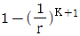
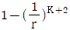
(정답률: 알수없음)
13. 1기압의 A 기체 5L 와 0.5기압의 B기체 10L 를 전부피15L인 병에 넣었다. 온도가 일정하다면 전압력은 몇 기압이 되는가?
- 0.67
- 0.75
- 1.0
- 1.5
(정답률: 알수없음)
14. 다음 중 반데르발스(van der waals) 실제 기체 방정식이 이상 기체의 성질에 근접하기 위해 가장 가까운 조건은?
- 온도가 낮고 압력이 낮아야 한다.
- 온도가 높고 압력이 낮아야 한다.
- 온도가 낮고 압력이 높아야 한다.
- 온도가 높고 압력이 높아야 한다.
(정답률: 알수없음)
15. 어떤 반응의 화학평형 상수를 결정하기 위하여 필요한 자료로 가장 거리가 먼 것은?
- 각 물질의 생성 엔탈피
- 각 물질의 열용량
- 화학양론 계수
- 각 물질의 증기압
(정답률: 알수없음)
16. 카르노사이클의 과정을 옳은 순서로 나타낸 것은?
- 등온팽창 → 등온압축 → 단열압축 → 단열팽창
- 등온팽창 → 단열팽창 → 단열압축 → 등온압축
- 등온팽창 → 단열팽창 → 등온압축 → 단열압축
- 등온팽창 → 등온압축 → 단열팽창 → 단열압축
(정답률: 알수없음)
17. P - H 선도에서 등엔트로피 선 기울기
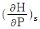
의 값은?- V
- -V
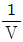
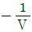
(정답률: 알수없음)
18. 다음 중 공기표준 오토사이클에 대한 설명으로 옳은 것은?
- 2개의 단열과정과 2개의 정적과정으로 이루어진 불꽃점화 기관의 이상사이클이다.
- 정압, 정적, 단열 과정으로 이루어진 압축점화 기관의 이상사이클이다.
- 2개의 단열과정과 2개의 정압과정으로 이루어진 가스 터빈의 이상사이클이다.
- 2개의 정압과정과 2개의 정적과정으로 이루어진 증기원동기의 이상사이클이다.
(정답률: 알수없음)
19. 다음 T-S 선도에서 건도 X 인 (1)에서의 습증기 1kg 당 엔트로피는 어떻게 표시되는가? (단, 건도 X 는 습증기 중 증기의 질량분율이고 V 는 증기, L 은 액체를 나타낸다. )
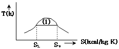
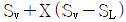
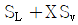
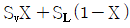
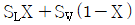
(정답률: 알수없음)
20. Z = 1 + BP 와 같은 비리얼 방정식(Virial equation)으로 표시할 수 있는 기체 1몰을 등온 가역과정으로 압력 P1에서 P2까지 변화시킬 때 필요한 일 W 를 옳게 나타낸 식은? (단, Z 는 압축인자이고 B 는 상수이다.)
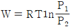
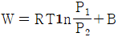
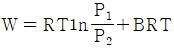
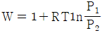
(정답률: 알수없음)
2과목: 화학공업양론
21. 다음 중 Hess의 법칙과 가장 관련이 있는 함수는?
- 비열
- 열용량
- 엔트로피
- 반응열
(정답률: 알수없음)
22. 공기 1mol 을 25℃에서 30L 로부터 10L 로 등온 가역압축 한다. 이 때 피스톤이 기체에 한 일을 계산하면 약 얼마인가? (단, 공기는 이상기체로 간주한다.)
- 26.85Lㆍatm
- 32.54Lㆍatm
- 38.27Lㆍatm
- 45.47Lㆍatm
(정답률: 알수없음)
23. 순수한 에탄올과 물을 각각 같은 무게로 혼합하여 용액 100g 을 만들었다. 이 용액에서 에탄올의 몰분율은?
- 0.74
- 0.28
- 0.11
- 0.028
(정답률: 알수없음)
24. 29.5℃에서 물의 증기압은 0.04bar 이다. 29.5℃, 1.0bar에서 공기의 상대습도가 70% 일 때 절대습도를 구하는 식은? (단, 절대습도의 단위는
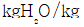
건조공기 이며 공기의 분자량은 29 이다.)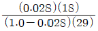
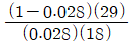
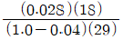
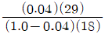
(정답률: 알수없음)
25. 에너지수지식은 다음 중 어느 법칙에 기인하는 것인가?
- 열역학 제1법칙
- 열역학 제2법칙
- 열역학 제3법칙
- 열역학 제0법칙
(정답률: 알수없음)
26. 공기 319kg 과 난소 24kg 을 반응로 안에서 완전연소 시킬 때 미반응 산소의 양은 약 몇 kg 인가?
- 9.9
- 4.9
- 2.3
- 0
(정답률: 알수없음)
27. 80℃에서 벤젠과 톨루엔의 증기압은 각각 746mmHg, 320mmHg 일 때 같은 온도에서 벤젠의 mol 분율이 0.2인 벤젠-톨루엔 혼합용액의 증기압(전압)은 몇 mmHg 인가? (단, 벤젠과 톨루엔은 이상용액에 가까운 용액을 만든다.)
- 261.8
- 382.7
- 4⑤.2
- 660.8
(정답률: 알수없음)
28. 다음 반응에 의하여 요소가 생산된다. 1단계 반응은 반응완결도가 100% 이고 2단계는 50% 라고 하면 매일 20ton의 요소를 생산하는데 필요한 암모니아는 약 몇 ton 인가?
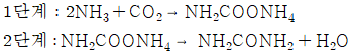
- 11.3
- 17.3
- 20.5
- 22.7
(정답률: 알수없음)
29. 25wt% NaOH 용액 100kg 을 농축하여 60wt% 의 NaOH 용액을 얻었다. 증발된 수분은 약 몇 kg 인가?
- 30.2
- 40.6
- 52.5
- 58.3
(정답률: 알수없음)
30. 증류탑을 이용하여 에탄올 25Wt% 와 물 75Wt% 의 혼합액 50kg/h 을 증류하여 에탄올 85Wt% 의 조성을 가지는 상부액과 에탄올 3Wt% 의 조성을 가지는 하부액으로 분리하고자 한다. 상부액에 포함되는 에탄올은 초기 공급되는 혼합액에 함유된 에탄올 중의 몇 Wt% 에 해당하는 양인가?
- 85
- 88
- 91
- 93
(정답률: 알수없음)
31. 4vol% 의 O2 가 함유된 기체가 1000m3/min 로 어떤 도관에 들어간다. 이 도관을 나갈 때 8vol% 의 O2 가 되도록 특수한 방법으로 공기를 공급한다. 공급하는 공기의 유량은 약 몇m3/min 인가? (단, 온도와 압력은 일정하고 공기 중 O2는 21vol% 이다.)
- 308
- 432
- 500
- 615
(정답률: 알수없음)
32. 그림에서 mi는 질량유량, Xij는 흐름 i에서의 성분 j의 분율이다. 다음의 관계식 중 틀린 것은? (단, i = 1,2,3 이고 j = 1.2 이다.)
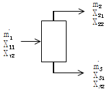
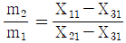
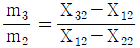
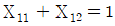
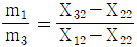
(정답률: 알수없음)
33. 127℃, 10atm에서 압축인자가 0.96 일 때 NH3 가스 34kg 의 체적은 약 몇 m3 인가?
- 6.3
- 7.3
- 8.3
- 9.3
(정답률: 알수없음)
34. 온도 0℃, 압력 10mmHg, 체적 10L 의 이상기체에는 몇 개의 분자가 들어 있는가?
- 3.54 × 1018
- 3.54 × 1019
- 3.54 × 1020
- 3.54 × 1021
(정답률: 알수없음)
35. 20℃에서 물 100g 에 녹는 Na2SO4ㆍ10H2O 은 56.4g 이다. 같은 온도에서 물에 대한 황산나트륨의 용해도는 얼마인가? (단, Na 의 원자량은 23 이고 S 의 원자량은 32 이다.)
- 15.87
- 16.9
- 18.9
- 24.87
(정답률: 알수없음)
36. A 성분과 B 성분의 Binary system에서 기상과 액상이 평형관계에 있다고 한다면 A 성분 기상의 몰분율 YA 에 관한 일반식은? (단, α는 B성분에 대한 A성분의 휘발도이고, X는 액체의 몰분율이다.)
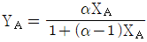
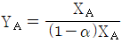
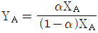
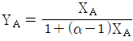
(정답률: 알수없음)
37. X성분의 질량분율이 X4인 수용액 L[kg]과 XB인 수용액 N[kg]을 혼합하여 XM의 질량분율을 갖는 수용액을 얻으려고 한다. L과 N의 비를 옳게 나타낸 것은?
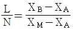
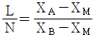
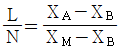
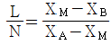
(정답률: 알수없음)
38. 습한 H2의 1250m3 가 30℃, 742mmHg에서 물로써 포화 되어 있다고 하면 표준상태의 건조 H2의 부피는 약 몇 m3 인가? (단, 30℃ 에서의 물의 증기압은 32mmHg 이다.)
- 710
- 742
- 1022
- 1⑤2
(정답률: 알수없음)
39. 다음과 같은 반응의 표준반응열은 몇 kcal/mol인가? (단,
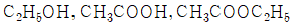
의 표준연소열은 각각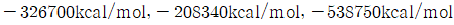
이다.)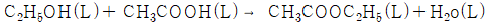
- -14240
- -3710
- 3710
- 14240
(정답률: 알수없음)
40. 가역적인 일정압력의 닫힌계에서 전달되는 열의 양과 같은 값은?
- 깁스자유에너지 변화
- 엔트로피 변화
- 내부에너지 변화
- 엔탈피 변화
(정답률: 알수없음)
3과목: 단위조작
41. 다음 중 액-액 추출기가 아닌 것은?
- Mixer-settler
- 충전 및 분무 추출탑
- Bollmann
- 맥동탑
(정답률: 알수없음)
42. A 와 B 의 혼합용액에서 를 활동도 계수라 할 때 최고공비 혼합물이 가지는  값의 범위를 옳게 나타낸 것은?
값의 범위를 옳게 나타낸 것은?
(정답률: 알수없음)
43. 벤젠과 톨루엔이 몰분율로 각각 0.8, 0.2인 혼합물이 있다. 벤젠 증기의 mol% 는 얼마인가? (단, 벤젠의 증기압과 톨루엔의 증기압은 각각 780mmHg, 480mmHg 이다.)
- 57
- 67
- 77
- 87
(정답률: 알수없음)
44. 다음 중 헨리의 법칙이 성립하는 영역으로 가장 적절한 것은?
- 화학적으로 반응할 경우
- 농도가 묽은 경우
- 결합력이 상당히 클 경우
- 온도가 높은 경우
(정답률: 알수없음)
45. 다음 중 건조시간이 극히 짧아 열에 예민한 물질을 건조할 수 있고 한 단계 공정으로 포장할 수 있는 마른 제품을 만들 수 있는 장점을 가지며 다른 종류의 건조기에서는 얻을 수 없는 구상제품을 얻을 때 유리한 것은?
- 상자건조기(Tray dryer)
- 회전건조기(Rotary dryer)
- 냉동건조기(Freezing dryer)
- 분무건조기(Spray dryer)
(정답률: 알수없음)
46. 고체건조의 항률 건조단계(constant rate period)에 대한 설명 중 틀린 것은?
- 항률 건조 단계에서 복사나 전도에 의한 열전달이 없는 경우 고체 온도는 공기의 습구온도와 동일하다.
- 항률 건조 단계에서 고체의 건조 속도는 고체의 수분 함량과 관계가 없다.
- 항률 건조 속도는 열전달식이나 물질전달식을 이용하여 계산할 수 있다
- 주로 고체의 임계 함수량(critical moisture content) 이하에서 항률 건조를 할 수 있다.
(정답률: 알수없음)
47. 정류탑의 이론단수가 최대가 되기 위한 환류비(Reflux Ratio)는?
- 최소 환류비
- 평균 환류비
- 전 환류비
- 최적 환류비
(정답률: 알수없음)
48. 폭이 3m 인 상부 통로를 통해서 폭포수가 낙하하고 있다. 한 시간당 낙하수량이 100ton 이라면 그 액부하(Liquid loading)는 몇 kg/mㆍs 인가?
- 3.70
- 5.50
- 7.56
- 9.26
(정답률: 알수없음)
49. 복사에너지를 증가시킬 수 있는 방법으로 옳지 않은 것은?
- 온도를 고온으로 한다.
- 복사 면적을 크게 한다.
- 흑체에 가까운 물질을 만든다.
- 표면을 광택 있게 한다.
(정답률: 알수없음)
50. 증류탑에서 정류부(rectifying) 및 탈거부(stripping) 각각의 조작선 기울기에 대한 설명 중 옳은 것은?
- 정류부 조작선의 기울기와 탈거부 조작선의 기울기는 항상 1보다 크다.
- 정류부 조작선의 기울기와 탈거부 조작선의 기울기는 항상 1보다 적다.
- 정류부 조작선의 기울기는 항상 1보다 크고, 탈구부 조작선의 기울기는 항상 1보다 작다.
- 정류부 조작선의 기울기는 항상 1보다 작고, 탈거부 조작선의 기울기는 항상 1보다 크다.
(정답률: 알수없음)
51. 길이 7m 의 2중관식 열교환기가 있다. 외관의 내부직경 1⑤.3mm, 외관의 외부직경 114.3mm, 내관의 내부직경 52.9mm, 내관의 외부직경 60.5mm 이다. 이 열교환기의 환상부(Annular space)에 냉각수를 20m3/h 의 속도로 보낼때 생기는 압력손실을 구하기 위해 사용될 상당 직경은 몇 mm 인가?
- 44.8
- 52.4
- 53.8
- 61.4
(정답률: 알수없음)
52. 비중 0.9 인 액체의 절대압력이 3.6kgf/cm2 일 때 두(Head)로 환산하면 약 몇 m 에 해당하는가?
- 3.24
- 4
- 25
- 40
(정답률: 알수없음)
53. 증류에서 환류비를 나타낸 것 중 옳지 않은 것은? (단, V 는 탑상 증기의 flow rate, D 는 탑상 제품의 flow rate, L 은 환류액의 flow rate 이다. )
(정답률: 알수없음)
54. 흡수탑에서 액체 체류량이 증가하기 시작하는 것을 의미하는 것은?
- 범람점(flooding point)
- 부하점(loading point)
- 편류(channeling)
- 비말동반(entrainment)
(정답률: 알수없음)
55. 다음 중 증발에 관련된 내용으로 틀린 것은?
- 역용해도 곡선을 보이는 용액에서 용질의 용해도는 관 벽에서 최소가 된다.
- 증발기의 경제성에 영향을 미치는 주 인자는 효용관 개수이다.
- 효용관수 증가에 따라 다중효용증발기의 운전비용은 증가하고 경제성은 감소한다.
- 일정농도에서 용액의 끓는점과 용매의 끓는점을 도시하면 선형 관계를 보인다.
(정답률: 알수없음)
56. 비중이 1인 물과 비중이 13.6 인 수은으로 구성된 U자형 마노미터의 압력차가 0.2기압일 때 마노미터에서 수은의 높이차는 약 몇 m 인가?
- 0.16
- 0.12
- 0.08
- 0.06
(정답률: 알수없음)
57. 내경 150mm, 길이 150m 의 수평관에 비중 0.8 의 기름을 평균 1m/s 의 속도로 보낼 때 레이놀드 수(Reynolds number)를 측정하였더니 1600 이었다. 이 때 생기는 마찰손실은 약 몇 kgfㆍm/kg 인가?
- 2.04
- 4.0
- 9.1
- 21
(정답률: 알수없음)
58. 1기압 하에 있는 벤젠-톨루엔 혼합용액에서 벤젠의 몰분율이 0.4 이고 이것과 평형에 있는 증기에서의 벤젠의 몰분율이 0.8 일 때 벤젠의 톨루엔에 대한 비휘발도는?
- 0.167
- 2.67
- 6
- 7
(정답률: 알수없음)
59. 내경이 10cm 인 액체 수송용 파이프 속에 구경이 5cm 인 오리피스 미터가 설치되어 있고 이 오리피스에 부착된 수은 마노미터의 눈금차가 12cm 이다. 만일 5cm 오리피스 대신에 구경이 2.5cm 인 오리피스 미터를 설치했다면 수은 마노미터의 눈금차는 약 몇 cm 가 되겠는가?
- 6
- 24
- 144
- 192
(정답률: 알수없음)
60. Fick의 법칙에 대한 설명으로 옳은 것은?
- 확산속도는 농도구배 및 면적에 반비례한다.
- 확산속도는 농도구배 및 면적에 비례한다.
- 확산속도는 농도구배에 반비례하고, 면적에 비례한다.
- 확산속도는 농도구배에 비례하고, 면적에 반비례한다.
(정답률: 알수없음)
4과목: 반응공학
61. 다음 제어기 중 off set 은 제거할 수 있으나 미래의 에러를 반영할 수 없어 제어성능 향상에 한계를 가지는 것은? (단, 모든 제어기들이 튜닝이 잘 되었을 경우를 가정한다. )
- P 형
- PI 형
- PD 형
- PID 형
(정답률: 알수없음)
62. 전달함수가 인 1차계에 크기 M인 계단변화가 도입되었을 때의 응답은? (단, 정상상태는 0 으로 간주한다.)
(정답률: 알수없음)
63. 개루프 안정공정(open-loop stable process)에 다음 제어기를 적용하였을 때, 일정한 설정치에 대해 off-set이 발생하는 것은?
- P형
- I형
- PI형
- PID형
(정답률: 알수없음)
64. 근사적으로 다음 보우드(bode)선도와 같은 주파수 응답을 보이는 전달함수는? (단, AR은 진폭비, ω는 각주파수이다.)
(정답률: 알수없음)
65. 다음 블록선도에서 전달함수 는?
(정답률: 알수없음)
66. 단위 귀환계에서 에 대한 선도가 옳게 작도된 것은?
- ①
- ②
- ③
- ④
(정답률: 알수없음)
67. 이차시간지연계 를 비례제어기(Proportional P Controller)를 사용하여 제어할 때 단위계단형 설정치 변화(Unit Step Set point Change)에 대해 정상상태의 출력 값은? (단, 비례제어기의 비례이득(gain)은 1.0이다.)
- 1
- 0
(정답률: 알수없음)
68. 다음과 같은 블록선도에서 정치제어 (regulatory control)일 때 옳은 상관식은?
(정답률: 알수없음)
69. 다음 그림은 간단한 제어계 block 선도이다. 전체 제어계의 총괄전달함수(overall transfer function)에서 시상수(time constant)는 원래 process 의 시상수에 비해서 어떠한가? (단, K ＞ 0 이다.)
- 늘어난다.
- 줄어든다.
- 불변이다.
- 늘어날 수 있고 줄어들 수도 있다.
(정답률: 알수없음)
70. 다음 함수를 Laplace 변환 할 때 올바른 것은?
(정답률: 알수없음)
71. 열전쌍(thermocouple)과 전송기로 구성된 온도측정기가 있다. 열전쌍을 얼음물에 넣었을 때 2V 의 신호가 나오고, 손에 쥐고 있을 때 4V 의 신호가 나오며, 끓는 물에 넣었을 때는 5V 의 포화 출력신호가 나온다. 이 온도측정기의 이득 km 을 옳게 구한 것은? (단, 얼음물의 온도, 손의 온도, 끓는 물의 온도는 각각 0℃, 36.5℃, 100℃ 이다.)
- Km = (4-2)/(36.5-0) ≒ 0.⑤5 V/℃
- Km = (5-1)/(100-0) = 0.040 V/℃
- Km = (5-2)/(100-0) = 0.030 V/℃
- Km = (5-4)/(100-36.5) ≒ 0.016 V/℃
(정답률: 알수없음)
72. 주제어기의 출력 신호가 종속제어기의 목표 값으로 사용되는 제어는?
- 비율제어
- 내부모델제어
- 예측제어
- 다단제어
(정답률: 알수없음)
73. 밑넓이가 A 인 그림과 같은 공정의 블록다이아그램을 옳게 나타낸 것은?
(정답률: 알수없음)
74. 다음과 같은 블록다이아그램에서 R = 0 일 때 전달함수(C/U) 를 옳게 나타낸 것은?
(정답률: 알수없음)
75. 다음 중 공정제어의 목적과 가장 거리가 먼 것은?
- 반응기의 온도를 최대 제한값 가까이에서 운전함으로 반응속도를 올려 수익을 높인다.
- 평형반응에서 최대의 수율이 되도록 반응온도를 조절한다.
- 안전을 고려하여 일정 압력이상이 되지 않도록 반응속도를 조절한다.
- 외부 시장 환경을 고려하여 이윤이 최대가 되도록 생산량을 조정한다.
(정답률: 알수없음)
76. 감지기의 성능을 나타내는 용어 중 폭(span)을 설명하는 것은?
- 일정한 공정 조건에서 반복된 측정값간의 차이이다.
- 감지기 측정값의 일관성을 나타내는 지표이다.
- 감지기가 공정변화에 응답하는 속도의 척도이다
- 감지기/전송기로 측정할 수 있는 최대값과 최소값사이의 차이이다.
(정답률: 알수없음)
77. 3개의 안정한 pole 들로 구성된 어떤 3차계에 대한 Bode diagram에서 위상각은?
- 0° ~ 180° 사이의 값
- 0° ~ -180° 사이의 값
- 0° ~ -270° 사이의 값
- 0° ~ 270° 사이의 값
(정답률: 알수없음)
78. 다음 블록선도에서 전달함수 를 옳게 구한 값은?
(정답률: 알수없음)
79. 전달함수 에 해당하는 시간영역에서의 표현으로 옳은 것은?
(정답률: 알수없음)
80. 라플라스 함수 의 시간영역에서의 함수는?
(정답률: 알수없음)
5과목: 공정제어
81. 아세틸렌을 출발물질로 하여 염화구리와 염화암모늄 수용액을 통해 얻은 모노비닐아세틸렌과 염산을 반응시키면 얻는 주생성물은?
- 클로로히드린
- 염화프로필렌
- 염화비닐
- 클로로프렌
(정답률: 알수없음)
82. 다음 중 소오다회 제조법으로써 암모니아를 회수하는 것은?
- 르블랑법
- 솔베이법
- 수은법
- 격막법
(정답률: 알수없음)
83. 염화비닐은 아세틸렌에 다음 중 어느 것을 작용시키면 생성되는가?
- NaCl
- KCl
- HCl
- HOCl
(정답률: 알수없음)
84. 실리콘 진성반도체의 전도대(conduction band)에 존재하는 전자수가 6.8×1012/m3이며, 전자의 이동도 (mobility)는 0.19m2/Vㆍs, 가전자대(valence band)에 존재하는 정공(hole)의 이동도는 0.0425m2/Vㆍs일 때 전기전도도는 얼마인가? (단, 전자의 전하량은 1.6×10-19Coulomb 이다.)
(정답률: 알수없음)
85. 다음의 인산칼슘 중 수용성 성질을 가지는 것은?
- 인산 1칼슘
- 인산 2칼슘
- 인산 3칼슘
- 인산 4칼슘
(정답률: 알수없음)
86. 다음의 O2 : NH3의 비율 중 질산제조 공정에서 암모니아 산화율이 최대로 나타나는 것은? (단, Pt 촉매를 사용하고 NH3농도가 9%인 경우이다)
- 9 : 1
- 2.3 : 1
- 1 : 9
- 1 : 2.3
(정답률: 알수없음)
87. 니트로화합물 중 트리니트로톨루엔에 관한 설명으로 틀린 것은?
- 물에 매우 잘 녹는다.
- 톨루엔을 니트로화하여 제조할 수 있다.
- 폭발물질로 많이 이용된다.
- 공업용 제품은 담황색 결정형태이다.
(정답률: 알수없음)
88. 염화암모늄(염안)은 암모니아소다법에서 중탄산소다를 분리하고 난 모액으로부터 부생된다. 이 때 사용되는 물질이 아닌 것은?
- NaCl
- CO2
- H2O
- H2SO4
(정답률: 알수없음)
89. 나프타(naphtha)를 열분해하여 석유화학 공업의 원료를 만들 때 다음 중 가장 많이 얻어지는 것은?
- 아세틸렌
- 에틸렌
- 부타디엔
- 페놀
(정답률: 알수없음)
90. 원유의 증류시 탄화수소의 열분해를 방지하기 위하여 사용되는 증류법은?
- 상압증류
- 감압증류
- 가압증류
- 추출증류
(정답률: 알수없음)
91. 아닐린에 대한 설명으로 옳지 않은 것은?
- 비점이 약 184℃ 인 액체이다.
- 니트로벤젠은 아닐린으로 환원될 수 있다.
- 상업적으로 가장 많이 이용되는 제조공정은 벤젠의 암모니아 첨가 분해반응이다.
- 알코올, 에테르에 녹는다.
(정답률: 알수없음)
92. Leblanc 법으로 100% HCl 1ton 을 제조하기 위해 사용해야 하는 NaCl 의 이론량은 약 몇 kg 인가? (단, Na 의 원자량은 23, Cl 의 원자량은 35.5 이다.)
- 1603
- 1703
- 1803
- 1903
(정답률: 알수없음)
93. 다음의 반응에서 NO의 수율을 높이는 방법에 대한 설명으로 옳지 않은 것은?
- 산소와 암모니아의 농도비를 적절하게 조절한다.
- 반응가스 유입량에 따라 적합한 산화온도를 적용한다.
- 반응시 80 ~ 100atm 의 고압을 가한다.
- Pt 나 Pt - Rh 과 같은 촉매를 사용한다.
(정답률: 알수없음)
94. 소금의 전기분해에 의한 가성소다 제조공정 중 격막식 전해조의 전력원단위를 향상시키기 위한 조치로서 옳지 않은 것은?
- 공급하는 소금물을 양극액 온도와 같게 예열하여 공급한다.
- 동판 등 전해조 자체의 재료의 저항을 감소시킨다.
- 전해조를 보온한다.
- 공급하는 소금물의 망초의 함량을 2% 이상 유지한다.
(정답률: 알수없음)
95. 암모니아 합성은 고온, 고압하에서 이루어지며 촉매에 가장 적절한 온도를 설정하는 것이 중요하다. 이 때의 온도조절 방식이 아닌 것은?
- 뜨거운 가스 혼합식
- 촉매층간 냉각 방식
- 촉매층내 냉각방식
- 열 교환식
(정답률: 알수없음)
96. 아세트알데히드는 법을 이용하여 에틸렌으로부터 얻어질 수 있다. 이 때 사용되는 촉매에 해당하는 것은?
- 제올라이트
- NaOH
- PdCl2
- FeCl3
(정답률: 알수없음)
97. 황산 중에 들어있는 비소산화물을 제거하는데 이용되는 물질은?
- NaOH
- KOH
- NH3
- H2S
(정답률: 알수없음)
98. 벤젠을 400 ~ 500℃에서 촉매상으로 접촉 기상 산화시킬 때의 주생성물은?
- 나트넨산
- 푸마르산
- 프탈산무수물
- 말레산무수물
(정답률: 알수없음)
99. 성형할 수지, 충전제, 색소 경화제등의 혼합분말을 금형에 반 정도 채워 넣고 가압가열하여 열경화시키는 방법은?
- 주조
- 압축성형
- 제강
- 제선
(정답률: 알수없음)
100. 이론적으로 0.5Faraday 의 전류량에 의해서 생성되는 NaOH 의 양은 몇 g인가? (단, Na 의 원자량은 23이다.)
- 10
- 20
- 30
- 40
(정답률: 알수없음)
6과목: 화학공업개론
101. 다음 반응의 경우 50℃에서 반응물 A 의 반감기는 초기 농도에 관계없이 2시간으로 일정하다. 이 반응에서 반응물 A 의 반응속도는 A 의 농도에 관하여 몇 차 반응인가?
- -1 차
- 0 차
- 1 차
- 2 차
(정답률: 알수없음)
102. 체적이 일정한 회분식반응기에서 다음과 같은 1차 가역반응이 초기 농도가 0.1mol/L 인 순수 A 로부터 출발하여 진행된다. 평형에 도달했을 때 A 의 분해율이 85% 이면 이 반응의 평형상수 Kc는 얼마인가?
- 0.18
- 0.57
- 1.76
- 5.67
(정답률: 알수없음)
103. 비가역 1차 반응에서 속도정수가 2.5×10-3s-1이었다. 반응물의 농도가 2.0×10-2mol/cm3일 때의 반응속도는 몇 mol/cm3ㆍs인가?
(정답률: 알수없음)
104. 크기가 같은 관형반응기와 혼합반응기에서 다음과 같은 액상 1차 직렬반응이 일어날 때 관형반응기에서의 R 의 성분수율 와 혼합반응기에서의 R 의 성분수율 에 관한 설명으로 옳은 것은?
(정답률: 알수없음)
1⑤. 고체촉매 반응에서 기공확산 저항에 대한 설명 중 옳은 것은?
- 유효인자(effectiveness factor)가 작을수록 실제 반응속도가 작아진다.
- 고체촉매 반응에서 기공확산 저항만이 율속단계가 될 수 있다.
- 기공확산 저항이 클수록 실제 반응속도는 증가된다.
- 기공확산 저항은 항상 고체입자의 형태에는 무관하다.
(정답률: 알수없음)
106. Arrhenius 법칙에서 속도상수 k 와 반응온도 T 의 관계를 옳게 설명한 것은?
- k 와 T 는 직선관계가 있다.
- ln k 와 1/T 은 직선관계가 있다.
- ln k 와 ln (1/T) 은 직선관계가 있다.
- ln k 와 T 는 직선관계가 있다.
(정답률: 알수없음)
107. 체적 0.212m3 의 로켓엔진에서 수소가 6kmol/s 의 속도로 연소된다. 이 때 수소의 반응속도는 약 몇 kmol/m3 ㆍ s 인가?
- 18.0
- 28.3
- 38.7
- 49.0
(정답률: 알수없음)
108. 어떤 A → R 의 반응이 용적 0.1L 인 혼합흐름반응기에서 반응속도 으로 진행되었다. 초기농도가 0.1mol/L이고 공급 속도가 0.⑤L/min 일 때 전환율은 몇 % 인가?
- 91
- 73
- 50
- 35
(정답률: 알수없음)
109. 반응식이 2A + 2B → R 일 때 각 성분에 대한 반응 속도식의 관계로 옳은 것은?
(정답률: 알수없음)
110. 기상 촉매반응의 유효인자(effectiveness fact)에 영향을 미치는 인자로 다음 중 가장 거리가 먼 것은?
- 촉매 입자의 크기
- 촉매 반응기의 크기
- 반응기 내의 전체 압력
- 반응기 내의 온도
(정답률: 알수없음)
111. 다음 반응은 기초 반응(elementary reaction)이다. 이 반응의 분자도(molecularity)는 얼마인가?
- 1
- 2
- 3
- 0
(정답률: 알수없음)
112. 다음 비가역 기초반응에 의하여 연간 2억kg 에틸렌을 생산하는데 필요한 플러그흐름반응기의 부피는 몇 m3 인가? (단, 압력은 8atm, 온도는 1200K 등온이며 압력강하는 무시하고 전화율 90% 를 얻고자 한다.)
- 2.82
- 28.2
- 42.8
- 82.2
(정답률: 알수없음)
113. 평형이 1bar, 560℃에서 진행될 때 평형상수 가 100mbar 이다. 평형에서 반응물 A 의 전화율은?
- 0.12
- 0.27
- 0.33
- 0.48
(정답률: 알수없음)
114. 0차 균질 반응이 로 플러그 흐름반응기에서 일어난다. A 의 전환율이 0.9 이고 일 때 공간시간은 몇 초인가? (단, 이 때 용적 변화율은 일정하다.)
- 1300
- 1350
- 1450
- 1500
(정답률: 알수없음)
115. 다음 반응에서 생성속도의 비를 가장 정확하게 나타낸 식은? (단, k1, k2는 각 경로에서의 속도상수이고 각각의 반응 차수는 a1, a2이다.)
(정답률: 알수없음)
116. 직렬로 연결된 2개의 혼합반응기에서 다음과 같은 액상반응이 진행될 때 두 반응기의 체적 V1과 V2의 합이 최소가 되는 체적비 V1/V2에 관한 설명으로 옳은 것은? (단, V1은 앞에 설치된 반응기의 체적이다.)
- 0 ＜ n ＜ 1 이면 V1/V2는 항상 1보다 작다.
- n = 1 이면 V1/V2는 항상 1이다.
- n ＞ 1 이면 V1/V2는 항상 1보다 크다.
- n ＞ 0 이면 V1/V2는 항상 1 이다.
(정답률: 알수없음)
117. 효소반응속도 에서 반응속도의 기질농도 (S) 의존성을 옳게 설명한 것은? (단, Vmax는 최대반응속도, Km은 미케일리스 상수다.)
- 기질농도가 크면 반응속도는 무한히 증가한다.
- 기질농도가 크면 반응속도는 최대치로 간다.
- 반응속도가 최대이면 기질농도는 작아진다.
- 미케일리스 상수는 총괄 효소농도에 항상 의존한다.
(정답률: 알수없음)
118. 공간시간과 평균체류시간에 대한 설명 중 틀린 것은?
- 밀도가 일정한 반응계에서는 공간시간과 평균체류시간은 항상 같다.
- 부피가 팽창하는 기체 반응의 경우 평균체류 시간은 공간시간보다 작다.
- 반응물의 부피가 전화율과 직선 관계로 변하는 관형 반응기에서 평균체류 시간은 반응속도와 무관하다.
- 공간시간과 공간속도의 곱은 항상 1 이다.
(정답률: 알수없음)
119. 자기촉매 반응에서 목표 전환율이 반응속도가 최대가 되는 반응 전환율보다 낮을 때 사용하기에 유리한 반응기는? (단, 반응생성물의 순환이 없는 경우이다.)
- 혼합 반응기
- 플러그 반응기
- 직렬 연결한 혼합 반응기와 플러그 반응기
- 병렬 연결한 혼합 반응기와 플러그 반응기
(정답률: 알수없음)
120. 등온 균일 액상 중합반응에서 34분 동안에 monomer 의 20% 가 반응하였다. 이 반응이 일차 비가역 반응으로 진행된다고 가정할 때 속도식을 옳게 나타낸 것은? (단, 는 반응물 monomer 의 농도이다.)
(정답률: 알수없음)